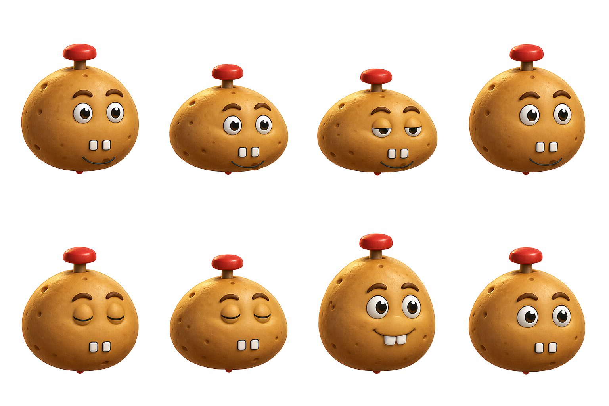

正常 → 压低 → 压缩极限(第3帧最低) → 回正眨眼 → 下蹲 → 伸展极限(第7帧最高) → 回中。直接切换8张源图，无交叉淡化。土豆整体为一个刚体，底部接地不动、不横滑，红色按钮随身移动。
上方为放大检查，下方为接近游戏中的显示尺寸。

实际导出：1536×1024 透明PNG，4列×2行。按8个实际角色区域切帧，底部接地锚点对齐。原始带背景生成图：potatomine-bounce-blink-8f-v1.png。
查看8帧姿态参考图 · 静态母版 potatomine-design-v1.png